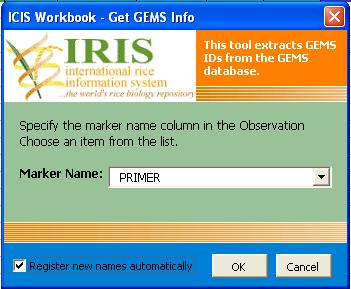
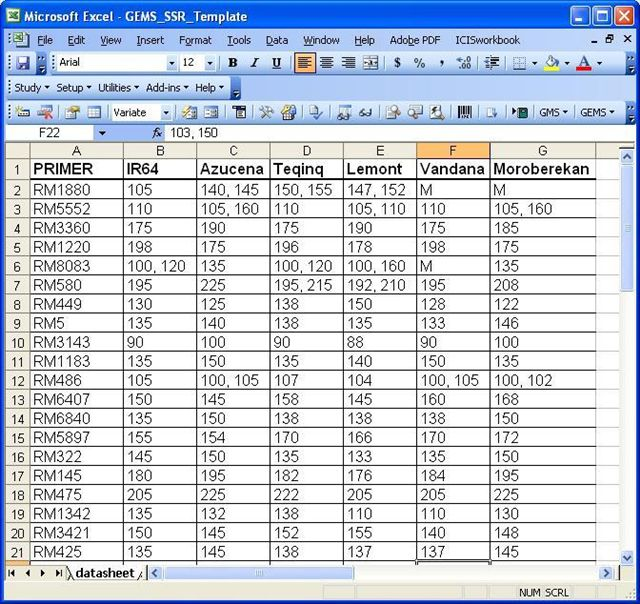

Loading SSR Data into ICIS
From ICISWiki
Contents |
Using ICIS Workbook
The ICIS Workbook template for loading SSR marker data has 5 worksheets.
- Description Worksheet
- Observation Worksheet
- Marker Worksheet (new)
- Protocol Worksheet (new)
- Datasheet Worksheet (new)
Description Sheet
The Description sheet contains the information about the experiment or the study. The description sheet has 5 parts (STUDY, CONDITION, FACTOR, VARIATE and CONSTANT). More information on creating workbook templates can be found in the ICIS Workbook TDM. The factors used in the example below are primer id, primer, genotype, DNA_GID, ACC_GID and the ALLELE_NO. The value of the ALLELE_NO is the maximum number of different alleles found in the experiment. The VARIATES used are alleleid, allele, and size,height,volume for each allele.
Observation Sheet
The sample Observation Sheet below shows all the factors and variates already filled out. Initially, the primer_id and the allele_id columns were blank. The values in the primer_id and alleleid were retrieved from the GEMS database using the workbook tool for GEMS. The tool can be used to look for the primer_id of a given primer in the GEMS_NAMES table. An option to add new markers is also available. If the user checks the "Register New Names Automatically", all new marker names that are found in the observation sheet but are not found in the database will be automatically added to the database. In adding new markers, the tool first looks for a Markers Sheet from among the existing worksheets in the workbook. If the information for the new marker is in the Markers Sheet, the new marker will be added to the database.
To get coresponding marker IDs for Marker Names:
- Select the first cell of the Column where the Marker IDs will be placed. In the example, the marker IDs will be placed in the Primer_ID column.
- Click on the Get Marker ID from the GEMS tools.
- The following dialog box will appear. Check the "Register New Names" checkbox to add new marker names that were found in the Observation Sheet but is not in the database.
 - Select the column name where the marker names can be found. In the example, the marker names can be found in the Primer column.
- Click Ok.
GEMS tool also has functions for retrieving Allele IDs from the GEMS database. This tool can also serve as a batch loading tool for markers.
Marker Sheet
The Markers Sheet is used to fill up the marker detector table. It is used to add new markers in the gems_marker_detector table. The Markers Sheet is an additional sheet for ICIS workbook. It is a plain worksheet which has the following columns: Marker, Protocol, motif, forward and reverse primers, minimum and maximum alleles. It should also have "Markers" as its worksheet name. All other columns in the Markers Sheet will be ignored. Data in the minimum and maximum alleles should be numeric.
If the user chooses to add/ register new found markers, the gems tool first looks for the Markers sheet if it exists, then looks for the marker information in the Markers Sheet. If the marker information is present in the Markers Sheet, the new marker will then be added in the GEMS database. If a primer/marker is in the observation sheet but is not in the marker sheet, the GEMS tool will return 0.
Protocol Sheet
The protocol sample template below is specific to SSR. This template is divided into the following portions: PCR Recipe, PCR Conditions, Electrophoresis, Gel Recipe and Visualization. These portions are colored blue. Below each portion are the different components(in black) which can be characterized by property, scale and method (in green).
PCR condition has Initial denaturation, Annealing as components. Properties of denaturation component are temperature, duration and cycle. A Temperature can have Farenheit and Celsius as scales.
Datasheet Example 1
A datasheet with this format can be imported to the Observation worksheet using the Import Genotype tool for GEMS. 
Datasheet Example 2
Using PostgreSQL Scripts
The script described below is designed to load SSR data from the GCP template worksheet.
Set Variables
- Name of Files -- The following variables were used as variables to contain the filenames (with complete path) of the marker.txt and data_list.txt file
\set marker_file '\'/SSR/tables/markers.txt'' \set data_file '\'/SSR/tables/data_list.txt''
- STUDY table - The variables were used to contain values from the experiment.txt file. This variables is associated with the study factor.
\set sname '\'SSR\'' \set pmkey 0 \set title '\'SSR data\'' \set objectiv '\' Genotyping study\'' \set investid 0 \set stype '\'E\'' \set sdate 20040601 \set edate 20060413
- GEMS_NAMES table -- The location and date variables refers to the location and date when the name (markername or allele name) was assigned.
\set gnlocn 0 \set gndate 20040301
- GEMS_MARKER_DETECTOR -- Since this is specific to the SSR template, marker detector type variable is set to SSR
\set matype '\'SSR\''
- GEMS_MV -- Molecular Variant type is set to 'allele'
\set mvtype '\'allele\''
Create Table marker_txt
- Create the marker_txt table. It will contain the data from the marker_version1.txt. Field types of this table must match the field types of each column in th marker_version1.txt.
CREATE TABLE marker_txt ( marker varchar(50) NOT NULL, chromosome varchar(10), map varchar(20), position_cm float8, motif varchar(20), forward_primer varchar(50), reverse_primer varchar(50), annealing_tm int8, min_allele float8, max_allele int8, accession_genbank varchar(20), reference varchar(255) )
- COPY data from the data file into the newly created marker_txt table. Null values were represented by a .
copy "marker_txt" from :marker_file WITH NULL AS
Get Marker and Locus from the Marker_txt Table
- Call the check_marker_name() function use the variables set above
SELECT check_marker_name(:gnlocn, :gndate, :matype);
Function: check_marker_name(int4, int4, text)
Loops thru the marker_txt table and checks if markers from the Marker_txt table is also in the GEMS_NAMES table. If it does not exist, add to GEMS_NAMES table and GEMS_MARKER_DETECTOR table
CREATE OR REPLACE FUNCTION check_marker_name(int4, int4, text)
RETURNS int4 AS
$BODY$
DECLARE
var_gnlocn ALIAS FOR $1;
var_gndate ALIAS FOR $2;
var_matype ALIAS FOR $3;
change INT ;
new_gnid INT;
rec_marker RECORD;
name_record RECORD;
max_gnid INT;
max_mdid INT;
BEGIN
change:=0;
select max(gnid) into max_gnid from gems_names;
select max(mdid) into max_mdid from gems_marker_detector;
FOR rec_marker
IN SELECT * FROM marker_txt LOOP
change:= change+1;
SELECT into name_record * FROM marker_txt,gems_names
WHERE gems_names.gnval = marker_txt.marker and gems_names.gntype = 2
and marker_txt.marker = rec_marker.marker;
IF NOT FOUND THEN
BEGIN
max_gnid:=max_gnid+1;
max_mdid:=max_mdid+1;
INSERT INTO gems_names (gnid, gobjtype, gobjid, gntype, gnstat,
gnuid, gnval, gnlocn, gndate,gnref)
VALUES (max_gnid, 'gems_marker', max_mdid, 2, 0, 0,
rec_marker.marker, var_gnlocn, var_gndate,0);
INSERT INTO gems_marker_detector (mdid,matype,fprimer,rprimer,lmdid,
mauid,maref,minallele,maxallele)
VALUES (max_mdid,var_matype,rec_marker.forward_primer,
rec_marker.reverse_primer, 0,0,rec_marker.reference,
rec_marker.min_allele,rec_marker.max_allele);
END;
END IF;
END LOOP;
RETURN change ;
END;
$BODY$
LANGUAGE 'plpgsql' VOLATILE;
- Call update locus Function
Select update_locusid()
FUNCTION : update_locusid()
This function gets all distinct combination of map,choromosome and position from the marker_txt table.
Each combination will be checked against the gems_locus table. The combination will be added to the gems_locus if it does not exist in the table.
CREATE OR REPLACE FUNCTION update_locusid() RETURNS int4 AS
$BODY$
DECLARE
min_locusid INT;
rec RECORD;
BEGIN
SELECT min(locusid)-1 INTO min_locusid FROM gems_locus;
FOR rec IN
SELECT DISTINCT chromosome,map, position_cm FROM marker_txt LOOP
INSERT INTO gems_locus( locusid, pos, chr,map )
VALUES (min_locusid, rec.position_cm,rec.chromosome, rec.map);
min_locusid :=min_locusid -1;
END LOOP;
RETURN min_locusid;
END;
$BODY$
LANGUAGE 'plpgsql' VOLATILE;
Create data_list table
- Create the data_list table. The data_list table will contain data from the data_list file
CREATE TABLE data_list ( sampleid int8 NOT NULL, accession int8 NOT NULL, marker varchar(50) NOT NULL, gel_run varchar(50), dye int8, allele int8, size float8, quality int8, height varchar, volume int8, amount float8, )
- Copy data from the data_list file into the newly created data_list table
copy "data_list" from :data_file WITH NULL AS ;
- Add ounitid, entrynumber, mdid, locusid, mvid, snlevel and mvlevel in the data_list table
ALTER TABLE data_list ADD COLUMN ounitid int NOT NULL DEFAULT 0; ALTER TABLE data_list ADD COLUMN entrynumber serial; ALTER TABLE data_list ADD COLUMN snlevel int DEFAULT 0; ALTER TABLE data_list ADD COLUMN mdid int DEFAULT 0; ALTER TABLE data_list ADD COLUMN mvid int DEFAULT 0; ALTER TABLE data_list ADD COLUMN locusdi int DEFAULT 0; ALTER TABLE data_list ADD COLUMN mvlevel int DEFAULT 0;
- Update the mdid column in the data_list table
UPDATE data_list set mdid = gems_names.gobjid from gems_names where gems_names.gnval = data_list.marker and gems_names.gntype = 2 ;
- Update the locusid column in the data_list table
UPDATE data_list SET locusid =
(SELECT DISTINCT locusid
FROM gems_locus,(SELECT data_list.mdid, marker_txt.marker,
marker_txt.chromosome, marker_txt.position_cm,
marker_txt.map
FROM data_list LEFT join marker_txt
ON data_list.marker = marker_txt.marker)as x
WHERE x.position_cm = gems_locus.pos
and x.chromosome = gems_locus.chr
and x.map =gems_locus.map
and data_list.marker = x.marker)
Check if allele/mvid exist in the gems_names table
- Call check allele function
SELECT check_allele_name(:locusid, :mvtype);
FUNCTION : check_allele_name(text) This function checks if the allele value in the allele column in the data_list table exists in the GEMS_NAMES table. If it does not exist, a new mvid value will be assigned and will be inserted to the GEMs_NAMES and GEMS_MV table.
CREATE OR REPLACE FUNCTION check_allele_name(text)
RETURNS int4 AS
$BODY$
DECLARE
var_mvtype ALIAS FOR $2;
change INT ;
new_gnid INT;
name_record RECORD;
max_gnid INT;
max_mvid INT;
BEGIN
change:=0;
select max(gnid) into max_gnid from gems_names;
select max(mvid) into max_mvid from gems_mv;
FOR rec_allele
IN SELECT mdid,locusid,allele FROM data_list LOOP
change:= change+1;
SELECT gems_names.gnval, gems_mv.mvid, gems_mv.mdid INTO name_record
FROM gems_names INNER JOIN gems_mv ON gems_names.gobjid=gems_mv.mvid
WHERE gems_names.gntype=3 and gems_mv.mdid = rec_allele.mdid
and gems_names.gnval = rec_allele.allele;
IF NOT FOUND THEN
BEGIN
max_gnid:=max_gnid+1;
max_mvid:=max_mvid+1;
INSERT INTO gems_names(gnid, gobjtype,objid,gntype,gnstat,gnuid,gnval,gnlocn,gndate,gnref)
VALUES (max_gnid,'gems_mv',max_mvid,3,0,0,rec_allele.allele,0,0,0);
INSERT INTO gems_mv(mvid, locusid, mvtype,mvuid,mdid,lmvid,mvref,mwt)
VALUES (max_mvid,rec_allele.locusid,var_mvtype,0,rec_allele.mdid,0,0,0);
END;
END IF;
END LOOP;
RETURN change ;
END;
$BODY$
LANGUAGE 'plpgsql' VOLATILE;
- Update the mvid column in the data_list table
Select update_datalistmvid();
FUNCTION : update_datalistmvid() This function updates the mvid column in the data_list table. It looks for the mvid value of the allele in the gems_names.
CREATE OR REPLACE FUNCTION update_datalistmvid()
RETURNS int4 AS
$BODY$
DECLARE
rec RECORD;
change INT;
BEGIN
change:=0;
FOR rec
IN SELECT entrynumber, mdid, allele FROM data_list LOOP
UPDATE data_list SET mvid =
(SELECT x.mvid
FROM
(SELECT distinct a.gnval as gnval,b.mvid as mvid, b.mdid as mdid
FROM gems_names as a, gems_mv as b
WHERE a.gobjid = b.mvid and a.gntype = 3) as x
WHERE x.gnval = rec.allele and x.mdid = rec.mdid )
WHERE data_list.entrynumber = rec.entrynumber;
END LOOP;
RETURN change ;
END;
$BODY$
LANGUAGE 'plpgsql' VOLATILE;
Setup the study factor
- Call the setup study function
SELECT setup_study(:sname);
FUNCTION : setup_study(text)
This function sets the study factor
Parameter : Study Name
Output : minimum represno
This function sets the study factor. The study name is inserted as a record in the factor table with its trait,scale and method id. The study is then defined in the level_c, effect and oindex tables. Variates for the study is also defined in the variates table. All observation units of the study should also be defined in the oindex table. All observation units have the same factorid and levelno as the study.
CREATE OR REPLACE FUNCTION setup_study(text)
RETURNS int4 AS
$BODY$
DECLARE
var_sname ALIAS FOR $1;
var_studyid INT ;
min_factorid INT;
min_labelid INT;
min_levelno INT;
min_represno INT;
min_effectid INT;
min_ounitid INT;
rec_stdy RECORD;
name_record RECORD;
BEGIN
SELECT studyid INTO var_studyid FROM study where sname = var_sname;
SELECT min(factorid)-1 INTO min_factorid FROM factor ;
SELECT min(labelid)-1 INTO min_labelid FROM factor;
SELECT min(levelno)-1 INTO min_levelno FROM level_c;
SELECT min(represno)-1 INTO min_represno FROM effect;
SELECT min(effectid)-1 INTO min_effectid FROM effect;
SELECT min(ounitid)-1 INTO min_ounitid FROM oindex;
--define the study in the FACTOR table
INSERT INTO factor ( labelid, factorid, fname, studyid, traitid, scaleid,tmethid,ltype )
VALUES (min_labelid , min_factorid, 'STUDY' , var_studyid , 201 , 134 , 123, 'C');
--define the study in the LEVEL_C table
INSERT INTO LEVEL_C ( labelid, factorid, levelno, lvalue )
VALUES (min_labelid , min_factorid , min_levelno , var_sname);
-define the study in the EFFECT table
INSERT INTO effect ( represno, factorid, effectid )
VALUES (min_represno , min_factorid, min_effectid);
--define the observation units for the study effect in the OINDEX table
INSERT INTO oindex ( ounitid, factorid, levelno, represno )
VALUES (min_ounitid, min_factorid, min_levelno, min_represno);
--define the amount/frequency variate in the VARIATE table
INSERT INTO variate ( variatid, vname, studyid, vtype, traitid, scaleid, tmethid,dtype )
SELECT min(variatid)-1, 'FREQ', var_studyid, 'MV', 501, 508, 508, 'N' FROM variate;
--insert studyid in the oindex table
FOR rec_stdy IN
SELECT entrynumber FROM data_list LOOP
BEGIN
INSERT INTO oindex (ounitid, factorid, levelno, represno)
VALUES (min_ounitid-1, min_factorid,min_levelno, min_represno);
-- update the ounitid column in the data_list table
UPDATE data_list SET ounitid = min_ounitid where entrynumber=rec_stdy.entrynumber;
min_ounitid:= min_ounitid - 1;
END;
END LOOP;
RETURN min_represno;
END;
$BODY$
LANGUAGE 'plpgsql' VOLATILE;
Setup the sample factor
Call the setup sample factor function
SELECT setup_sample_factor(:sname);
FUNCTION : setup_sample_factor(text)
Parameter : Study Name
Output : minimum represno
This Function sets the sample factor of the study. An entrynumber was defined to create a unique identifier for each sample. Entrynumber was used as the factor while the sampleid and accession were used as labels of the factor entrynumber. When inserted into the factor table, entrynumber, sampleid and accession share the same factorid but with different labelids, trait, scale and method ids. <br.
The sample factor is also defined in the level_n factor. While the sample factor is being inserted in the level_n table, the snlevel column of the data_list table is being updated. The snlevel is equal to the levelno of the sample unit factor. The ounitid, snlevel and factorid of each sample unit will then be inserted into the oindex table.
The ounitid is the same as the ounitid used in the definition of the study factor.
CREATE OR REPLACE FUNCTION setup_sample_factor(text) RETURNS int4 AS
$BODY$
DECLARE
var_sname ALIAS FOR $1;
var_studyid INT;
min_factorid INT;
min_labelid INT;
min_levelno INT;
min_represno INT;
min_ounitid INT;
e_labelid INT;
s_labelid INT;
a_labelid INT;
rec_entry RECORD;
BEGIN
--setup the sample factor in the FACTOR table
SELECT min(factorid)-1 INTO min_factorid FROM factor;
SELECT min(labelid)-1 INTO min_labelid FROM factor;
SELECT min(levelno)-1 INTO min_levelno FROM level_n;
SELECT min(represno) INTO min_represno FROM effect;
e_labelid := min_labelid;
s_labelid := e_labelid -1;
a_labelid := s_labelid -1;
SELECT studyid INTO var_studyid FROM study WHERE sname = var_sname;
SELECT min(ounitid)-1 INTO min_ounitid FROM OINDEX;
INSERT INTO factor ( labelid, factorid, fname, studyid, traitid, scaleid, tmethid,ltype )
VALUES (e_labelid, min_factorid, 'ENTRYNUMBER' , var_studyid, 251, 103, 17, 'N');
INSERT INTO factor ( labelid, factorid, fname, studyid, traitid, scaleid, tmethid,ltype )
VALUES (s_labelid, min_factorid, 'SAMPLEID' , var_studyid, 212, 219, 17, 'N');
INSERT INTO factor ( labelid, factorid, fname, studyid, traitid, scaleid, tmethid,ltype )
VALUEs (a_labelid, min_factorid, 'ACCESSION' , var_studyid, 251, 97, 17, 'N');
--insert entrynumber, sampleid and accession in the level_n table
FOR rec_entry IN
SELECT entrynumber,sampleid,accession from data_list LOOP
INSERT INTO level_n ( labelid, factorid, levelno, lvalue )
VALUES (e_labelid, min_factorid,min_levelno, rec_entry.entrynumber);
INSERT INTO level_n ( labelid, factorid, levelno, lvalue )
VALUES (s_labelid, min_factorid,min_levelno, rec_entry.sampleid);
INSERT INTO level_n ( labelid, factorid, levelno, lvalue )
VALUES (a_labelid, min_factorid,min_levelno, rec_entry.accession);
UPDATE data_list SET snlevel = min_levelno where entrynumber = rec_entry.entrynumber;
min_levelno:= min_levelno-1;
END LOOP;
INSERT INTO oindex (ounitid, factorid, levelno, represno)
SELECT ounitid, min_factorid, snlevel, min_represno from data_list;
RETURN min_represno;
END;
$BODY$
LANGUAGE 'plpgsql' VOLATILE;
Setup the mvid factor
Call setup mvid factor function
SELECT setup_mvid_factor(:sname);
FUNCTION : setup_mvid_factor(text)
Parameter: Study Name
Output: Minimum represno
This function sets the sample factor.
CREATE OR REPLACE FUNCTION setup_mvid_factor(text)RETURNS int4 AS
$BODY$
DECLARE
var_sname ALIAS FOR $1;
var_studyid INT;
change INT ;
min_factorid INT;
min_labelid INT;
min_levelno INT;
min_represno INT;
min_ounitid INT;
rec_mvid RECORD;
BEGIN
SELECT studyid INTO var_studyid FROM study where sname = var_sname;
SELECT min(factorid)-1 INTO min_factorid FROM factor;
SELECT min(labelid)-1 INTO min_labelid FROM factor;
SELECT min(levelno)-1 INTO min_levelno FROM level_n;
SELECT min(represno) INTO min_represno FROM effect;
--setup the MVID factor in the FACTOR table
INSERT INTO factor ( labelid, factorid, fname, studyid, traitid, scaleid, tmethid, ltype )
VALUES(min_labelid, min_factorid, 'MVID' , var_studyid, 501, 503, 17, 'N');
INSERT INTO factor ( labelid, factorid, fname, studyid, traitid, scaleid, tmethid, ltype
VALUES(min_labelid-1, min_factorid, 'ALLELE' , var_studyid, 501, 503, 17, 'N');
FOR rec_mvid IN
SELECT distinct mvid, allele FROM data_list LOOP
INSERT INTO level_n ( labelid, factorid, levelno, lvalue )
VALUES (min_labelid, min_factorid,min_levelno, rec_mvid.mvid);
UPDATE data_list SET mvlevel = min_levelno where mvid = rec_mvid.mvid;
INSERT INTO level_n ( labelid, factorid, levelno, lvalue )
VALUES (min_labelid-1, min_factorid,min_levelno, rec_mvid.allele);
min_levelno := min_levelno-1;
END LOOP;
INSERT INTO oindex (ounitid, factorid, levelno, represno)
SELECT ounitid, min_factorid, mvlevel, min_represno from data_list;
RETURN min_represno;
END;
$BODY$
LANGUAGE 'plpgsql' VOLATILE;
Update data_n table
Call update data Function
SELECT update_data_n ();
FUNCTION : update_data_n() This function inserts the variate (amount) into the DATA_N table
CREATE OR REPLACE FUNCTION update_data_n() RETURNS int4 AS
$BODY$
DECLARE
min_variatid INT;
BEGIN
SELECT min(variatid)INTO min_variatid FROM variate;
INSERT INTO data_n ( ounitid, dvalue, variatid )
SELECT ounitid, amount, min_variatid from data_list;
RETURN min_variatid;
END;
$BODY$
LANGUAGE 'plpgsql' VOLATILE;
Using GEMS Prototype interface
GEMS Interface was developed using Microsoft Access 2003. The prototype has 4 subforms which shows different information from the database.
Marker List subform
The Marker List Subform contains all existing Marker Detector names from the GEMS database.
Marker Detector Information subform
The Marker Detector Information subform contains information about the Marker Detector such as it's name, primers and reference in naming the marker detector. At the right side of the subform is another subform which contains the name of the Marker or Locus (and its map location) associated with the Marker Detector.
Molecular Variant Information subform
The Molecular Variant Information subform shows information on all existing molecular variants of a given marker.